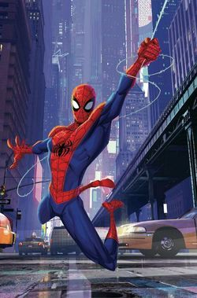

About Peter
Sometimes student, sometimes scientist and sometimes photographer, Peter Parker is a full-time super hero better known as the web-slinging and wall-crawling Spider-Man. As an orphaned child, Peter was raised by his Uncle Ben and Aunt May. At a science expo, Peter was bitten by an errant radioactive spider which granted him an array of arachnid powers. He initially became Spider-Man to use his powers as an entertainer, growing so conceited he didn't bother stopping a passerby burglar. In a twist of fate, the same burglar wound up killing Peter's Uncle Ben, leading him to realize that he needed to use his powers responsibly. From then on, Spider-Man became a crime-fighting vigilante.
Love Interests
- Felicia Hardy (Black Cat)
- Gwen Stacy
- Mary Jane Watson
- Betty Brant
- Carlie Cooper
- Natasha Romanoff (Black Widow)
- Carol Danvers (Ms. Marvel)
Pete's Friends
Peter has friends all through out the Multi-verse. Click on the links below to read more about them:
Referances